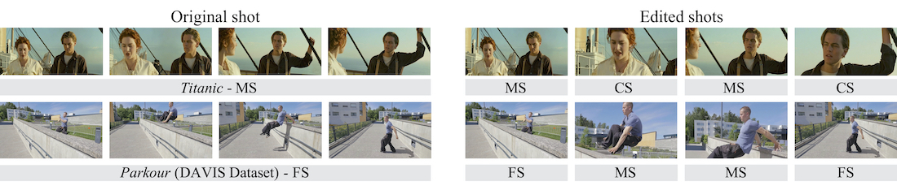

A Unified Framework for Shot Type Classification Based on Subject Centric Lens
European Conference on Computer Vision (ECCV) 2020
Overview
Shots are key narrative elements of various videos, e.g. movies
and user-generated videos that are thriving over the Internet. The types
of shots greatly influence how the underlying ideas, emotions, and messages are expressed. The techniques to analyze shot types is important
to the understanding of videos, which has seen increasing demand in
real-world applications in this era. Classifying shot type is challenging
due to the additional information required beyond the video content,
such as the spatial composition of a frame and camera movement. To
address these issues, we propose a learning framework Subject Guidance Network (SGNet) for shot type recognition. SGNet separates the
subject and background of a shot into two streams, serving as maps to
guide scale and movement type classification respectively. To facilitate
shot type analysis and model evaluations, we build a large-scale dataset
MovieShots, which contains 46K shots from 7K movie trailers with annotations of their scale and movement types. Experiments show that our
framework is able to recognize these two attributes of shot accurately,
outperforming all the previous methods.
Dataset
Shot scale has five categories: 1) long shot (LS) is taken from a long distance,
sometimes as far as a quarter of a mile away; 2) full shot (FS) barely includes
the human body in full; 3) medium shot (MS) contains a figure from the knees
or waist up; 4) close-up shot (CS) concentrates on a relatively small object,
showing the face of the hand of a person; (5) extreme close-up shot (ECS) shows
even smaller parts such as the image of an eye or a mouth.
Shot movement has four categories: 1) in static shot, the camera is fixed but the subject is flexible to move; 2) for motion shot, the camera moves or rotates; 3) the camera zooms in for push shot, and 4) zooms out for pull shot. While all the four movement types are widely used in movies, the use of push and pull shots only takes a very small portion. The usage of different shots usually depends on the movie genres and the preferences of the filmmakers.
Shot movement has four categories: 1) in static shot, the camera is fixed but the subject is flexible to move; 2) for motion shot, the camera moves or rotates; 3) the camera zooms in for push shot, and 4) zooms out for pull shot. While all the four movement types are widely used in movies, the use of push and pull shots only takes a very small portion. The usage of different shots usually depends on the movie genres and the preferences of the filmmakers.
Prototype
Application: Shot Type Change

Introduction Video
Materials

Citation
@inproceedings{rao2020unified,
title={A Unified Framework for Shot Type Classification Based on Subject Centric Lens},
author={Rao, Anyi and Wang, Jiaze and Xu, Linning and Jiang, Xuekun and Huang, Qingqiu and Zhou, Bolei and Lin, Dahua},
booktitle = {The European Conference on Computer Vision (ECCV)},
year={2020}
}